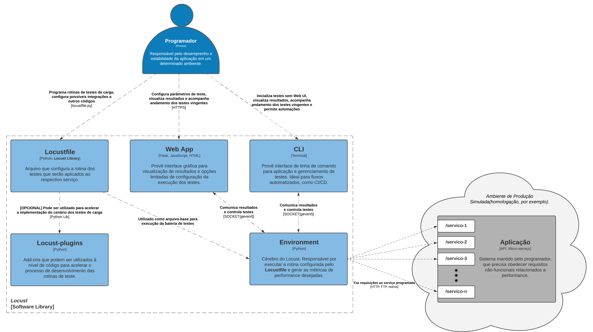

Descrição Arquitetural do Locust
Autores
Este documento foi produzido por Guilherme de Melo Carneiro.
- Matrícula: 118210938
- Contato: guilherme.carneiro@ccc.ufcg.edu.br
- Projeto documentado: https://github.com/locustio/locust
Descrição Arquitetural – Locust
Este documento descreve parte da arquitetura do projeto Locust. Essa descrição foi baseada principalmente no modelo C4.
Descrição Geral sobre Locust
O Locust é uma solução open-source para testes de performance de aplicações. Com ele é possível estressar sistemas através da implementação(em python) de comportamento de “usuários-fantasmas”, que interagem com a aplicação levando-a ao limite, extraindo assim suas métricas de desempenho.
Testes de Carga utilizando Locust
Objetivo Geral
Possibilitar a testagem de requisitos de performance fora de ambiente de produção, para que os requisitos não-funcionais relacionados a desempenho sejam garantidos.
Objetivos Específicos
O Locust tem como objetivo permitir a extração de métricas de performance de uma API(ou serviço) nos mais diversos cenários. Cenários estes que podem ser programados via script e executados até o limite, com intuito de extrair informações importantes de desempenho sobre cada endpoint, por exemplo, aumentando a confiança na estabilidade do sistema. Algumas das métricas obtidas são os tempos mínimo e máximo de resposta obtidos sobre uma determinada carga, e também o número de requisições falhas sobre a mesma carga.
Contexto
O Locust é utilizado por profissionais da área de desenvolvimento, infraestrutura ou QA para testar a performance de uma aplicação quanto a carga que ela suporta até se tornar instável, isto é, até quantos usuários simultâneos executando requisições sucessivas ela atende, admitindo certo limite de falhas. Sabendo disso, é possível compreender o papel das três entidades do diagrama de contexto: o Programador é aquele que deseja testar a performance da aplicação e visualizar os resultados; A biblioteca Locust é aquela que interage com a aplicação, carregando-a de acordo com a rotina definida; A Aplicação é o objeto a ser testado, que responde às interações(requisições) feitas pelo Locust.

Containers
Como o Locust se trata de uma biblioteca, considerou-se um Container como sendo uma entidade de objetivo bem-definido e sentido completo dentro do contexto interno.
Aqui se descreve o objetivo de cada container, assim como as tecnologias utilizadas por eles:
- Locustfile: é implementado pelo utilizador para definir a rotina da unidade de teste que será executada nos testes de carga. Se trata de um script Python que utiliza tratativas específicas da biblioteca do Locust.
Segue uma amostra de como se programa uma rotina de teste que será executada pelo Locust:
import time
from locust import HttpUser, task, between
class QuickstartUser(HttpUser):
wait_time = between(1, 5)
@task
def hello_world(self):
self.client.get("/hello")
self.client.get("/world")
@task(3)
def view_items(self):
for item_id in range(10):
self.client.get(f"/item?id={item_id}", name="/item")
time.sleep(1)
def on_start(self):
self.client.post("/login", json={"username":"foo", "password":"bar"})
- Locust-plugins: é uma biblioteca secundária do ecossistema do Locust que pode ser utilizada como Helper para acelerar o desenvolvimento da rotina da unidade de teste. O uso dela é opcional. É implementada em Python.
- Web App: se trata do servidor Web local levantado pelo Locust junto com a execução dos testes de carga. Ele serve para o utilizador visualizar o andamento dos testes em tempo real e ajustar parâmetros de cenário de teste. Usa Flask para subir o servidor Web, e retorna páginas HTML estáticas, com Javascript e CSS.
- CLI: é a interface de linha de comando que pode ser utilizada pelo utilizador. Possui funções semelhantes ao Web App, mas sem o servidor Web e visualização gráfica. Também desenvolvida em Python.
- Environment: cérebro do Locust. Responsável por criar todo o ambiente de testagem e carregar as requisições para o serviço especificado, de acordo com o locustfile e parâmetros de cenário de teste.
É importante considerar o meio de comunicação entre esses Containers, que acontece principalmente via API de Sockets, utilizando a biblioteca Python gevent e seu conceito de Greenlet, que é orientada à programação assíncrona, comunicando-se via eventos.
As requisições feitas ao objeto de teste geralmente utilizam o protocolo HTTP, mas podem ser utilizado outros, a depender do tipo de serviço em questão.

Componentes
Seguindo a ordem do mais geral ao mais específico, zoom é dado no Container Environment.
Esse Container é considerado o cérebro do Locust, pois executa as requisições ao objeto de teste de maneira controlada. Como componentes dele, tem-se:
-
Runner: responsável por orquestrar os testes de acordo com o perfil dos usuários configurados. Faz o balanceamento desses perfis para distribuir as requisições que devem feitas por eles. Consome a rotina definida pelo usuário no Locustfile e tem seus parâmetros de cenário de teste controlados pelo Web App ou pelo CLI.
-
Stats: responsável por receber informações do Runner sobre os testes sendo executados e calcular as métricas de performance desejadas. Essas métricas são consumidas pelo Web App e/ou pelo CLI para que sejam visualizadas pelo utilizador.
-
Dispatcher: utilizado pelo Runner para organizar as requisições e dispará-las de maneira parametrizada em relação a carga, como quantidade de requisições por usuário, e também por espaço de tempo.

Código
Nesta etapa não faremos diagramas que apresentam detalhes da implementação. Faremos isso mais adiante.
Visão da Informação
O Locust inicia seu fluxo de informação recebendo do utilizador o arquivo locustfile.py devidamente implementado com a rotina de teste que será carregada no sistema objeto de teste. Após isso, os parâmetros relacionados ao cenário dos testes de carga, como quantidade de requisições por usuário, são definidos, podendo ser alterados pelo utilizador via Web App ou CLI antes ou durante a execução. Com os testes acontecendo, é possível acompanhar os resultados obtidos em tempo real, e também ter acesso aos resultados finais, com o fim da bateria de testes. Essas métricas, a medida que vão sendo obtidas, são transmitidas para o canal desejado pelo utilizador, seja o terminal ou a aplicação Web.